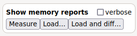
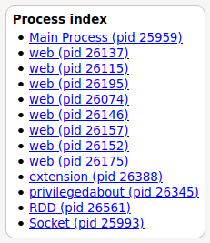

This page will guide you on how to investigate a memory
issue seen in Firefox. You will be faced with buttons to
answer the various questions and the questions would be
refined based on your answers.
At any time, you can copy the address bar and resume this
investigation later on.
If you think Firefox leaks memory, we should first
analyze where the issue is coming from.
Firefox has a special page which is named about:memory.
This page is the first page to visit if you have any doubt
about the memory consumption of Firefox.
If you have not done so already open a new tab and type about:memory in
the address bar.
When you visit this page, you are faced with multiple
buttons, and your first goal is to identify what might
sounds abnormal.
To generate a report, click on the "measure" button under
the "Show memory reports" box on the top-left corner.

An abnormal report would be a report where a process
consume an excessive amount of memory, and that this memory
seems excessive compared to the amount of content displayed
in the associated web page, or compared to the work
performed by the corresponding extensions.
The index of processes can be found on the right side of
the page. One should identify which process consumes an
excessive amount of memory by clicking on each process link,
and the first line named "explicit".

The explicit line account for all allocations made within
a single process. An abnormal memory consumption would have
a process with an explicit value which is above 1 GB, or
twice higher than the other processes.
Does the system tray display any value which would be
highly different than the memory reported in about:memory?
The fact that about:memory reports
a value different than the value reported by the system for
the same process suggests that there is a problem in our
memory reporting strategy.
Open a bug against the memory reporting tools, such that
developer can fix this issue before doing more investigation
on the potential leak issue which made you visit this page.
We do not seem to detect anything suspicious during this
investigation. If you are not convinced, you can still open
a bug.
The next step, while still looking at the report from about:memory is
to determine where the problem is.
The explicit section contains multiple sub-sections, such
as "heap-unclassified", "window-objects", "gfx". To identify
the biggest offender, fold everything, by clicking on the
sub-sections, and only expand the window-objects
sub-section.
What interest us now, is the name of the sub-section
which has the highest percentage value. Knowing this would
help us use the proper tool to investigate the memory issue.
In your report from about:memory,
in the abnormal process, under which sub-section do you see
the highest percentage located?
Unfortunately, we have not yet seen enough of these
issues yet to provide with good rules of thumbs on what to
do next.
Open a bug to get your issue fixed, and mention that this
website should be refined with the new findings.
The problem seems to be isolated with one website. Then
we have to figure out whether this can be reproduced and if
there is any special conditions under which this problem can
be reproduced.
Reproducing a memory issue can be a difficult task, as it
is not always obvious what circunstances caused the issue.
However, if we fail to reproduce the problem, we have no way
to know whether a futur change will fix the problem or not.
A bug which is not reproducible is most likely
non-actionable.
In some cases, Firefox web-extensions, by manipulating
the web-pages will cause leaks to appear. An easy way to
test that is to either create a new profile or to use thr
trouble-shoot mode. If the bug take a long time to
reproduce, a new profile might be the easiest way to go.
The troubleshoot mode is
a special mode of Firefox which restarts Firefox with a
configuration which has less tweaks, and closer to the
default settings from Firefox.
Are you able to reproduce this issue with the
troubleshoot mode?
Firefox has the option to setup a different profile,
which does not share anything with the original profile. You
can manage profile using the documentation mentioned on support.mozilla.org.
Are you able to reproduce this issue with the a new
profile?
Something in your configuration seems to cause the
problem to happen, either it is one addon, or a modification
of Firefox configuration as found in about:config.
At this stage, your goal is to isolate the minimal set of
addons/parameters which are causing this issue to happen.
Either by creating a new profile and reproducing as much as
possible your current configuration, or by modifying your
current profile by disabling most of the configuration.
Is this issue appearing when a specific addon/parameter is enabled?
Unfortunately, there is not much we can do.
Your best plan is to report this issue to the author of
the addon. In the mean time, if the leak is causing too many
problems you can disable the addon.
Good news! This problem might to be related to Firefox.
Open a bug, and report these findings naming explicitly the
parameters which are causing Firefox to leak memory, and how
to use Firefox to reproduce this memory leak.
Awesome, you managed to reproduce this issue with a fresh Firefox!
By reproducing this issue in a different browser this
would either move the blame to the Website developers or
Firefox developers. To check this, you will have to rely on
a browser which is not based on Gecko, such as Chromium.
Now the question is can this leak be reproduced in a
different browser which is not based on Gecko?
Unfortunately, there is not much that Firefox developers
can do, the website your are using seems to have a problem.
Your best plan is to report this issue to the author of
the website.
The problem seems to appear in a clean Firefox profile,
but it does not appear in other browser. This seems to be a
Firefox issue.
Firefox is a huge piece of software, and we have
different tools capable of reporting abnormal behavior in
different sections of Firefox.
When looking at about:memory, did you notice any major
usage of JavaScript memory?